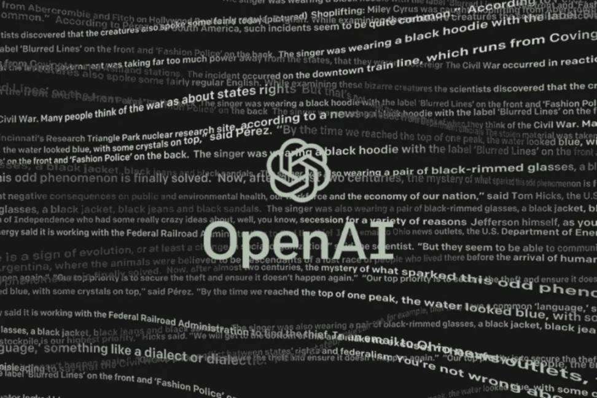

Table of Contents
3#+title: 20230317gpt的研究問題 腳本
1. Links:
- 【生成式AI】ChatGPT 原理剖析 (1/3) — 對 ChatGPT 的常見誤解
- 【生成式AI】ChatGPT 原理剖析 (2/3) — 預訓練 (Pre-train)
- 【生成式AI】ChatGPT 原理剖析 (3/3) — ChatGPT 所帶來的研究問題
- ChatGPT (可能)是怎麼煉成的 - GPT 社會化的過程
- 獨家／ChatGPT融入教育！教授用它當「助教」報告將變少改課堂測驗
- 臺大針對生成式AI工具之教學因應措施
- ChatGPT 黑化版來了！只要你威脅它 ChatGPT 什麼都敢講，還替各社群平台使用者智商評分
- 神運用ChatGPT！達人曝「這6工具必裝」工作幫大忙 一票人喊實用
- 用ChatGPT寫論文.報告?! 大學教授出題攻防 防堵不如駕馭它
- ChatGPT 對教育的挑戰，你準備好了嗎？國際名校教授：老師必須比學生更懂運用 AI
- 生成式 AI 對學習的挑戰與反思！陽明交大發起師生對談 ChatGPT
- ChatGPT怎麼用？7種老師應用ChatGPT的方法分享
- 陽明交大舉辦生成式AI對學習的挑戰與反思的論壇
- 當學生比教授懂ChatGPT，大學仍有用？那些新專業正崛起？
2.
3. 什麼是chatGPT
- 由chatGPT自己介紹自己：很高興為您介紹我自己。我是ChatGPT，一個基於GPT-3.5架構的大型語言模型，由OpenAI訓練。我的主要功能是通過自然語言生成與理解，幫助人們解決各種問題。我在各種領域中都有豐富的知識，例如自然語言處理、計算機科學和數學等[1]。對於學習和發展新想法，我始終持開放的態度，不斷地提高自己。如果您有任何問題或需要幫助，請隨時向我提出。謝謝！
- ChatGPT，全稱聊天生成型預訓練變換模型（英語：Chat Generative Pre-trained Transformer），是OpenAI開發的人工智慧聊天機器人程式，於2022年11月推出。該程式使用基於GPT-3.5架構的大型語言模型並以強化學習訓練。ChatGPT目前仍以文字方式互動，而除了可以用人類自然對話方式來互動，還可以用於甚為複雜的語言工作，包括自動生成文字、自動問答、自動摘要等多種任務。如：在自動文字生成方面，ChatGPT可以根據輸入的文字自動生成類似的文字（劇本、歌曲、企劃等），在自動問答方面，ChatGPT可以根據輸入的問題自動生成答案。還有編寫和除錯電腦程式的能力。在推廣期間，所有人可以免費註冊，並在登入後免費使用ChatGPT與AI機器人對話1。
- ChatGPT 是由 OpenAI 開發的自然語言處理（NLP）模型「GPT-3」延伸出的「GPT-3.5」製作的，基於 人類反饋強化學習(RLHF) 進行訓練，簡單來說就是人類提問機器答、機器提問人類答，並且不斷迭代，再排除掉不健康的答案，透過人類干預以增強機器學習的效果，獲得更為逼真的結果2。

Figure 1: 標題
4. openai
OpenAI 於 2015 年由埃隆馬斯克牽頭出資創立，是一家非盈利的研究性創業公司，矽谷知名創業孵化器 Y Combinator 掌門人 Sam Altman 和 Elon Musk 作為 OpenAI 首屆聯合主席，為其籌得了 10 億美金的起步資金。
在短短四年內，OpenAI 推出了用於開發和比較強化學習的演算法工具包 OpenAI Gym，用於在全球遊戲、網站和其他應用程序中測量和訓練 AI 的一般智能軟件平台 Universe，新的強化學習演算法近段策略優化，Dota AI OpenAI Five，類人機械手 Dactyl，GPT1 和 GPT2 等諸多產品。從人工智慧的底層架構出發，打造 AGI 的全方位研究版圖。
除了初創時投資者與創辦人共同承諾投入的10億美元以外，2019年微軟（Microsoft）加碼投資10億美元，希望透過此次和OpenAI的合作共同發展通用人工智慧，微軟想利用OpenAI先進人工智慧研究的力量，並且相關技術其民主化。
Figure 2: 標題
4.1. 我們該如何應對
我們常常會討論究竟是「時代造英雄」還是「英雄造時勢」，無論是前者還是後者，任何人都需要積極的面對世界的改變，從而更好的享受生活。 或許在未來的兩三年內，AI 不會取代太多的工作。但十年、二十年之後，可以提高平均社會生產效率的 AI 毫無疑問會成為社會發展的重要技術。轉移支付以及對失業人員的重新培訓和重新就業就顯得尤為重要。
5. 聊天機器人
- 廣義來說 ChatGPT 是一種聊天機器人的技術